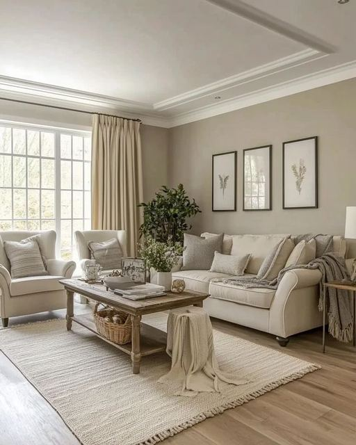
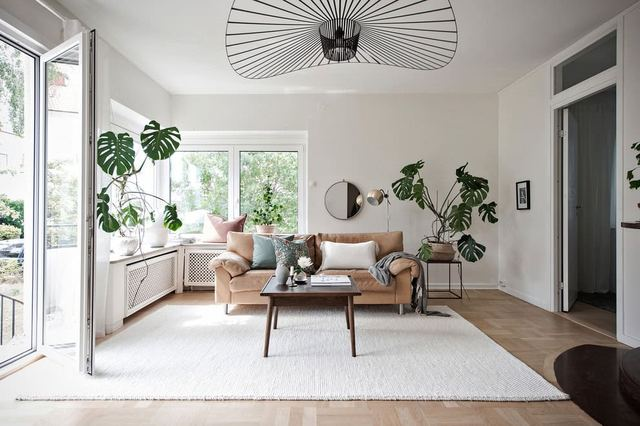
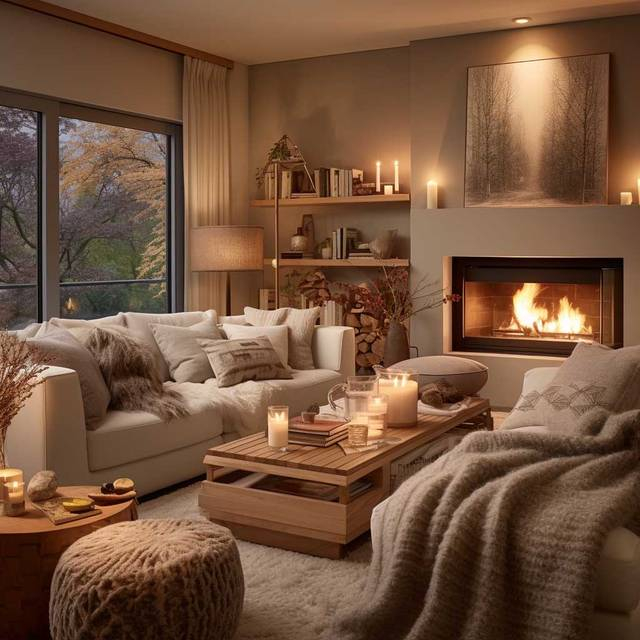

Nog op zoek naar je stijl?
 Capy, je persoonlijke stylist, helpt je op weg.
Capy, je persoonlijke stylist, helpt je op weg.
Kies de kamer die je aanspreekt en swipe door een paar meubels. Capy laat je zien welke stijl bij je past.
Ontdek je stijl →